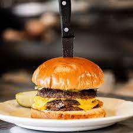

Cheeseburger

Description
This spicy, crispy, cheesy, swoon-inducing smash burger will have you going back for seconds thanks to the cheese and salsa
that melt into a queso-like moment and take this burger to the next level.
Ingredients
- 1 pound 85% lean ground beef
- 1/4 cup grated sweet onion (from 1 small onion)
- 2 tablespoons roasted, peeled, and chopped Hatch chiles (from fresh or thawed frozen chiles)
- 1 teaspoon kosher salt
- 1/2 teaspoon black pepper
- 1/4 cup canola oil, divided
- 8 white American cheese slices
- 4 brioche hamburger buns, split
- 1/4 cup unsalted butter, melted
- 6 tablespoons mayonnaise
- 6 tablespoons Hatch Chile Salsa
Steps
- Using your hands, combine beef, onion, chiles, salt, and black pepper in a large bowl just until evenly incorporated. Shape into 8 (2 1/2-ounce) balls.
- Heat a large cast-iron skillet or griddle over high until smoking.
Add 2 tablespoons oil. Add 4 meatballs, and immediately flatten to 1/4-inch-thickness with a sturdy, wide spatula.
Cook until bottoms are crisp and deep brown, about 1 minute.
Flip patties, top each with 1 cheese slice, and cook until bottoms are well charred and cheese is melted,
45 seconds to 1 minute. Remove from skillet, and cover to keep warm.
Repeat with remaining 2 tablespoons oil, remaining 4 meatballs, and remaining 4 cheese slices.
- Preheat broiler to high with oven rack 5 to 6 inches from heat.
Brush cut sides of buns with butter.
Arrange buns, cut side up, on a baking sheet.
Broil in preheated oven until toasted, 1 to 2 minutes.
Spread each bottom bun half with 1 1/2 tablespoons mayonnaise, top with 2 patties, and spoon 1 1/2 tablespoons Hatch chile salsa over top.
Cover with top bun halves, and serve immediately.